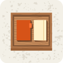
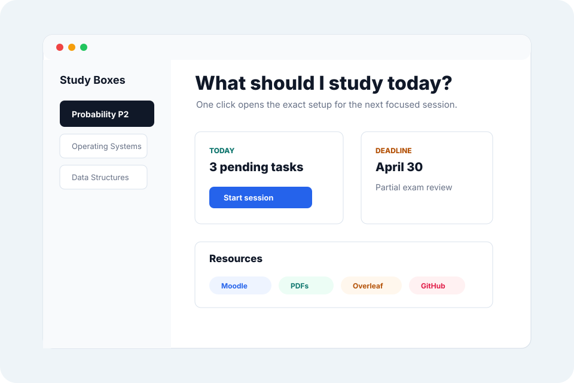

Everything for one class in one place.
Keep the PDF, exercise sheet, Moodle link, GitHub repo, notes, and checklist together.

Local-first study launcher for macOS
Study Boxes opens the exact files, folders, apps, links, notes, and tasks you need for a course, exam, assignment, or topic, so you can start studying instead of rebuilding your workspace.
Built by a student, for students.

Keep the PDF, exercise sheet, Moodle link, GitHub repo, notes, and checklist together.
Pick up where you left off with the right resources, checklist, and session context already together.
Study Boxes is a study launcher, checklist, and session tracker, not another generic organizer.
How it works
Each Study Box is built around one subject, exam, assignment, or topic. When the session starts, the box opens the right resources and keeps your next tasks visible.
Focus
The goal is not to block the whole internet. It is to remove the repeated setup loop: finding materials, checking what is next, and reopening the same links every session.
When a session starts, Study Boxes can hide unrelated apps so your study materials stay in front. If your box opens websites, your browser stays visible.
Privacy
Study Boxes keeps your materials organized locally, so your setup is still useful when Wi-Fi is bad, the LMS is slow, or you simply want fewer accounts involved.